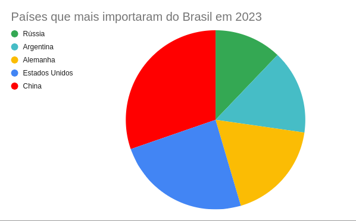

As vendas para os consumidores (tanto brasileiros quanto estrangeiros) que vivem fora do Brasil subiram cerca de 3% em comparação com o ano passado, indicando um aumento no interesse da população mundial pela compra de produtos brasileiros, o que se dá também por influência da mídia.
O gráfico 2 mostra os países que mais importaram nossos produtos esse ano.
Observe o gráfico abaixo:
